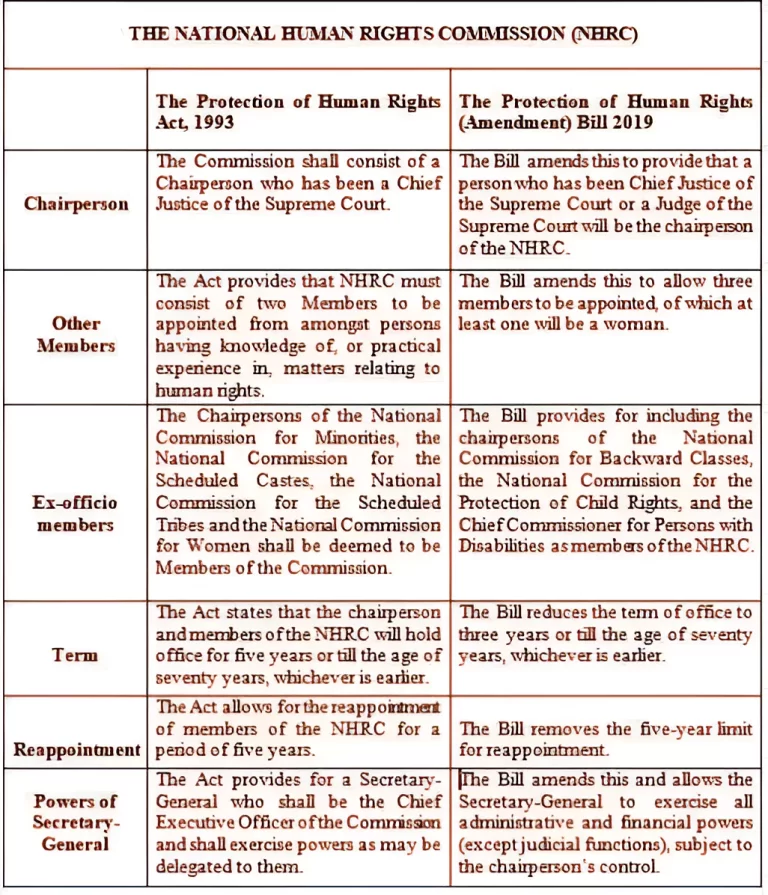

The National Human Rights Commission (NHRC) of India is a statutory body established under the provisions of the Protection of Human Rights Act of 1993. It serves as the primary institution for the protection and promotion of human rights in the country.
Origin and Mandate
- Mandate: Responsible for the protection and promotion of “rights relating to life, liberty, equality and dignity of the individual guaranteed by the Constitution or embodied in the International Covenants”.
- Set up: The NHRC came into existence after India enacted the Protection of Human Rights Act in 1993.
Structure of the NHRC
Selection Committee
The President of India appoints members based on the recommendation of a selection committee consisting of:
- Prime Minister (Chairman)
- Speaker of Lok Sabha
- Union Home Minister
- Deputy Chairman of Rajya Sabha
- Leaders of the Opposition in both Houses of the Parliament
Membership Composition
It consists of a chairperson, five full-time Members, and seven deemed Members:
- Chairman: A person who has been the Chief Justice of India or a judge of the Supreme Court.
- Judicial Members: One who is, or has been, a Judge of the Supreme Court and one who is, or has been, the Chief Justice of a High Court.
- Three Members: One shall be a woman from amongst persons having knowledge/practical experience in human rights matters.
- Ex-officio Members: Chairpersons of National Commissions for SC, ST, Minorities, Backward Classes, Women, Protection of Child Rights, and the Chief Commissioner for Persons with Disabilities.
Service and Removal
Members serve for a term of three years or until they attain the age of 70 years, whichever is earlier.
Grounds for Removal by the President:
- If he/she is an insolvent;
- If he/she engages in paid employment outside the office;
- If he/she is unfit by reason of infirmity of mind;
- If he/she is convicted and sentenced to imprisonment.

Functions of the NHRC
- Investigation: Investigates complaints or failure of any public official regarding rights violation, either suo motu or after receiving a petition.
- Prevention and Safeguard: Responsible for investigating inmates’ living conditions in prisons and making recommendations.
- Research: Promotes research and encourages NGOs. While investigating, the commission enjoys the powers of a civil court.
- Treaties: Studies international instruments on human rights and recommends effective implementation.
- Intervention: Can intervene in court proceedings involving human rights violations with court approval.
- Visit Jails: Visits jails and detention centers to study living conditions and make recommendations.
- Terrorism: Reviews factors that cause terrorism and suggests remedial measures.
Significance of NHRC
- Watchdog of Human Rights: Acts as a watchdog to protect civilian interests.
- Implementation: Ensures implementation of rights related to life, dignity, liberty, and equality (Section 2(1) of PHR Act).
- Moral Authority: Though recommendations are not binding, they carry weight and cannot be easily ignored by the government.
Criticism and Limitations
- Non-Binding: Recommendations are not binding on the government.
- No Penal Power: Cannot penalize authorities that don’t implement its orders.
- Excessively Judicial: Headed by judges, it functions primarily like a judicial authority.
- Limited Scope: Does not investigate cases older than one year, or those that are vague/frivolous.
- No Armed Forces Jurisdiction: Jurisdiction covers only civilian cases; no power over cases related to armed forces.
What are your Feelings